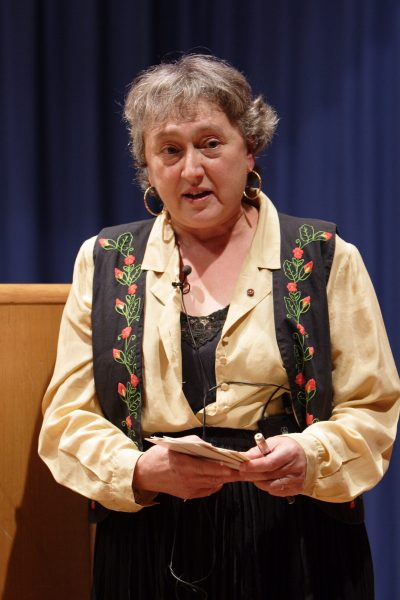

Resumo

Nasceu em Chicago em 5 de março de 1938, filha de Morris e Leone Alexander. Ingressou na Universidade de Chicago com apenas 15 anos. Aí conheceu Carl Sagan, então doutorando em física. Casaram quando Lynn tinha 19 anos. Recebe o bacharelado em Liberal Arts. Do casamento com Carl Sagan teve dois filhos, Dorion Sagan e Jeremy Sagan. Do seu segundo casamento com o cristalógrafo Thomas N. Margulis teve dois filhos, Zachary Margulis-Ohnunma e Jennifer Margulis di Properzio. Ela foi uma bióloga e professora na Universidade de Massachusetts. Seu trabalho científico mais importante foi a teoria da endossimbiose, segundo a qual a mitocôndria teria surgido por endossimbiose. A mitocôndria seria um organismo separado que teria entrado em simbiose com células eucarióticas.
História
Nasceu em Chicago em 5 de março de 1938, filha de Morris e Leone Alexander. Ingressou na Universidade de Chicago com apenas 15 anos. Aí conheceu Carl Sagan, então doutorando em física. Casaram quando Lynn tinha 19 anos. Recebe o bacharelado em Liberal Arts.
Do casamento com Carl Sagan teve dois filhos, Dorion Sagan (com quem co-escreveu vários livros) e Jeremy Sagan. Do seu segundo casamento com o cristalógrafo Thomas N. Margulis teve dois filhos, Zachary Margulis-Ohnunma e Jennifer Margulis di Properzio.
Seu trabalho científico mais importante foi a teoria da endossimbiose, segundo a qual a mitocôndria teria surgido por endossimbiose. A mitocôndria seria um organismo separado que teria entrado em simbiose com células eucarióticas.
Foi a principal defensora moderna do significado da simbiose na evolução. O historiador Jan Sapp disse que "o nome de Lynn Margulis é tão sinônimo de simbiose quanto o de Charles Darwin é com a evolução".
Em particular, Margulis transformou e fundamentalmente moldou o entendimento atual da evolução das células com núcleos - um evento que Ernst Mayr chamou "talvez o evento mais importante e dramático da história da vida"
- ao propor que foi o resultado de fusões simbióticas de bactérias. Margulis também foi a co-desenvolvedora da hipótese de Gaia com o químico britânico James Lovelock, propondo que a Terra funcionasse como um sistema único de autorregulação,
e foi a principal defensora e promotora da classificação dos cinco reinos de Robert Whittaker. Lynn Margulis teve várias publicações e alguns foram traduzidos para o portuuês como:
Margulis, Lynn (2001). Cinco reinos - Um guia ilustrado dos filos da vida na Terra.
Margulis, Lynn (2001). O planeta simbiótico - Uma nova perspectiva da evolução.
Margulis, Lynn e Lovelock, James (2002). Gaia - Uma teoria do conhecimento.
Margulis, Lynn e Sagan, Dorion (2002). O que é vida?.
Margulis, Lynn e Sagan, Dorion (2002). O que é sexo?.
Lynn faleceu em 22 de novembro de 2011, em sua casa em Amherst, Massachusetts, cinco dias depois de sofrer um acidente vascular cerebral hemorrágico. Seu corpo foi cremado e suas cinzas espalhadas nos campos ao redor de sua casa.
Contribuições
Desenvolvimento e consolidação da Teoria da Endossimbiose Seriada. Nas décadas de 1960 e 1980, ela estabeleceu que as células eucarióticas(que possuem núcleo e formam quase todos os seres vivos multicelulares) surgiram a partir da fusão simbiótica de bactérias de vida livre. Explicação da origem simbiótica de mitocôndrias e cloroplastos nas células eucarióticas. As células eucarióticas complexas surgiram a partir de uma cooperação íntima entre organismos mais simples. Ela provou que organelas vitais, como as mitocôndrias e os cloroplastos, eram originalmente bactérias de vida livre que foram engolfadas por uma célula hospedeira ancestral, passando a viver em simbiose mútua. Contribuição substancial para a Hipótese de Gaia ao lado de James Lovelock. Colaborou com o cientista James Lovelock para desenvolver a teoria de que a Terra funciona como um superorganismo autorregulado, onde os seres vivos interagem com o ambiente físico para manter as condições ideais para a vida Revisão do sistema de classificação dos seres vivos em Cinco Reinos (com Karlene V. Schwartz). Defendeu e ajudou a estruturar o sistema de classificação biológica que divide os seres vivos em cinco reinos (Monera, Protista, Fungi, Plantae e Animalia), organizando a diversidade de forma mais coerente com a evolução celular.
Referências
- Lynn Margulis. Disponível em: https://pt.wikipedia.org/wiki/Lynn_Margulis. Acesso em: 31 jul. 2026.
- Lynn Margulis. Encyclopaedia Britannica. Disponível em: https://www.britannica.com/biography/Lynn-Margulis. Acesso em: 31 jul. 2026.
- Lynn Margulis (1938–2011). Nature, v. 480, p. 458, 2011. DOI: 10.1038/480458a. Disponível em: https://www.nature.com/articles/480458a. Acesso em: 31 jul. 2026.